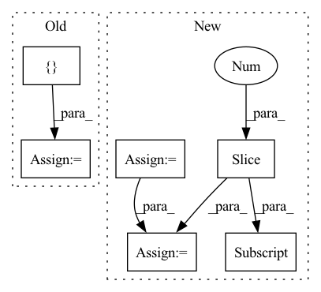

Pattern ID :831
Before Change
rel_embedded = self.relation_embeddings(relation_batch).view(-1, 1, self.img_height, self.img_width)
// batch_size, num_input_channels, 2*height, width
stacked_inputs = torch.cat([ e1_embedded, rel_embedded += self.b.expand_as(x)
pred = F.sigmoid(x)
return predAfter Change
def forward(self, batch, labels):
batch_size = batch.shape[0]
heads = batch[:, 0:1]
relations = batch[:, 1:2]
tails = batch[:, 2:3]
// batch_size, num_input_channels, width, height
heads_embs = self.entity_embeddings(heads).view(-1, 1, self.img_height, self.img_width)
relation_embs = self.relation_embeddings(relations).view(-1, 1, self.img_height, self.img_width)
tails_embs = self.entity_embeddings(tails).view(-1, self.embedding_dim)
// batch_size, num_input_channels, 2*height, width
stacked_inputs = torch.cat([heads_embs, relation_embs], 2)
// batch_size, num_input_channels, 2*height, width
stacked_inputs = self.bn0(stacked_inputs)
// batch_size, num_input_channels, 2*height, width
x = self.inp_drop(stacked_inputs)
// (N,C_out,H_out,W_out)
x = self.conv1(x)
x = self.bn1(x)
x = F.relu(x)
x = self.feature_map_drop(x)
// batch_size, num_output_channels * (2 * height - kernel_height + 1) * (width - kernel_width + 1)
x = x.view(batch_size, -1)
x = self.fc(x)
x = self.hidden_drop(x)
if batch_size > 1:
x = self.bn2(x)
x = F.relu(x)
scores = torch.sum(torch.mm(x, tails_embs.transpose(1, 0)), dim=1)
predictions = F.sigmoid(scores)
loss = self.compute_loss(predictions, labels)
return loss
In pattern: SUPERPATTERN
Frequency: 3
Non-data size: 6
Instances Fragment ID: 2638056
Project Name: pykeen/pykeen
Commit Name: e310dc04ccd0763bef25540fb0a19a7423a27a94
Time: 2018-09-19
Author: ali-mehdi@live.de
File Name: src/kg_embeddings_model/conv_e.py
M Class Name: ConvE
N Class Name: ConvE
M Method Name: forward(3)
N Method Name: forward(3)
M Parent Class: nn.Module
N Parent Class: nn.Module
M File Name: src/kg_embeddings_model/conv_e.py
N File Name: src/kg_embeddings_model/conv_e.py
M Start Line: 116
M End Line: 151
N Start Line: 114
N End Line: 153
Before Change
x = self.conv2d(input)
skips = []
skips.append(x)
for idx in range(self.num_stacks):
x = self.encoder[idx](x)
skips.append(x)
for idx in range(self.num_stacks - 1):
skip_idx = self.num_stacks - idx - 1
skip = skips[skip_idx]
x = self.decoder[idx](x, skip=skip)
output = self.bottleneck_conv2d(x)After Change
Kh, Kw = self.kernel_size
Ph, Pw = Kh - 1, Kw - 1
padding_top = Ph // 2
padding_bottom = Ph - padding_top
padding_left = Pw // 2
padding_right = Pw - padding_left
input = F.pad(input, (padding_left, padding_right, padding_top, padding_bottom))
x = self.conv2d(input)
x, skip = self.encoder(x)
x = self.bottleneck_conv2d(x)
x = self.decoder(x, skip[::-1] )
if self.pointwise_conv2d:
output = self.pointwise_conv2d(x)
else:
output = x
Fragment ID: 2638073
Project Name: tky823/dnn-based_source_separation
Commit Name: 8fb5cd5f4f8b4a435d058aef6204904f657abea0
Time: 2021-06-06
Author: 40362510+tky823@users.noreply.github.com
File Name: src/models/d3net.py
M Class Name: D3NetBackbone
N Class Name: D3NetBackbone
M Method Name: forward(2)
N Method Name: forward(2)
M Parent Class: nn.Module
N Parent Class: nn.Module
M File Name: src/models/d3net.py
N File Name: src/models/d3net.py
M Start Line: 206
M End Line: 220
N Start Line: 207
N End Line: 226
Before Change
def forward(self, x):
if self.training:
total_blocks = sum([len(sx) for sx in x])
mask_size = torch.Size([ total_blocks *= mask[mask_id]
mask_id += 1
return x, mask
return x, NoneAfter Change
def forward(self, X):
if self.training:
blocks_per_mod = [sx.shape[1] for sx in X]
mask_size = torch.Size([X[0].shape[0], sum(blocks_per_mod)])
binomial = torch.distributions.binomial.Binomial(probs=1 - self.p)
mask = binomial.sample(mask_size) * (1.0 / (1 - self.p))
mask_shapes = [list(x.shape[:2] ) + [1] * (x.dim() - 2) for x in X]
grouped_masks = torch.split(mask, blocks_per_mod, dim=1)
grouped_masks = [m.reshape(s) for m, s in zip(grouped_masks, mask_shapes)]
X = [x * m for x, m in zip(X, grouped_masks)]
return X, grouped_masks
return X, None
Fragment ID: 2638076
Project Name: anita-hu/msaf
Commit Name: a2c91bd6e186680ca2c41bbf22c9b57aff4654d2
Time: 2020-12-30
Author: anitahu113@gmail.com
File Name: MSAF.py
M Class Name: BlockDropout
N Class Name: BlockDropout
M Method Name: forward(2)
N Method Name: forward(2)
M Parent Class: nn.Module
N Parent Class: nn.Module
M File Name: MSAF.py
N File Name: MSAF.py
M Start Line: 40
M End Line: 49
N Start Line: 39
N End Line: 47